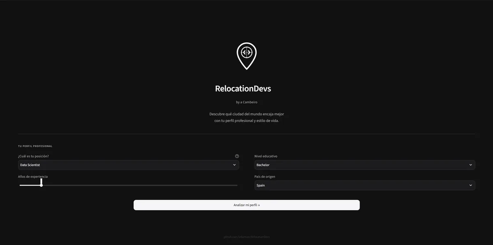

RelocationDevs
by a Cambeiro
Búsqueda avanzadaComparar ciudadesMapa de ciudadesSalarios devAcerca de RelocationDevs
Búsquedas populares: Houston · Zurich · Lisbon · Spain · Germany · Singapore
RelocationDevs en: English
Elige de 2 a 3 ciudades (empieza a escribir y elige de la lista).
324 de 578 ciudades tienen coordenadas en los datos del proyecto; el resto no aparece en el mapa.
Plataforma de apoyo a la decisión para profesionales tech que valoran en qué ciudad vivir fuera de su país: combina salario esperado, coste de vida, impuestos y mercado laboral.

Datos clave
- Costes de vida de 578 ciudades (Kaggle, Cost of Living Index 2022).
- Salarios de 18.112 desarrolladores de 149 países (Stack Overflow Developer Survey 2023).
- Modelo de regresión del salario anual bruto: MAE de 29.022 € y R² de 0,53.
Módulos de la app original
- Explorador de ciudades con una puntuación de reubicación y tabla filtrable.
- Comparador de ciudades con gráficas de barras y radar normalizado.
- Mapa interactivo con agrupación de ciudades y ventanas de detalle.
- Buscador de ciudad ideal en tres pasos, con radar de prioridades.
- Estimador de salario con un modelo Gradient Boosting.
- Informe en PDF con fotos de las ciudades y distribución de salarios.
Tecnologías
- Python
- pandas
- scikit-learn
- Streamlit
- Plotly
- Folium
Límites (dichos con claridad)
El error del modelo es alto por la gran variación geográfica de los datos (149 países). La limitación está documentada y se muestra a las personas usuarias dentro de la app.
Qué hay y qué no hay en esta maqueta
Sí: ranking, búsqueda con pesos propios, comparador, mapa y salarios, con los datos y la fórmula reales.
El salario medio del dataset de costes de vida es por país (igual para todas sus ciudades), no por ciudad. No incluye: el modelo de predicción salarial (Gradient Boosting), el asistente de 3 pasos con radar ni el informe PDF. Eso solo está en el repositorio.
Enlaces
La demo en línea de la app original ya no está disponible (han caducado claves de API). Esta maqueta estática, con los datos y la fórmula reales, la sustituye.